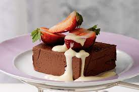

Chocolate marquise

For the decadent dinner party - this rich chocolate dessert is for serious chocoholics only
Description
For the decadent dinner party - this rich chocolate dessert is for serious chocoholics only
Ingredients
- 300g dark chocolate , use 70%, good quality, such as Valrhona or Green & Black's
- 150g unsalted butter , softened
- 150g caster sugar150g caster sugar
- 6 tbsp cocoa powder
- 6 eggs
- 450ml double cream
- 300g box After Eights
Steps
- Break the chocolate into pieces and place in a heatproof bowl. Then assemble a bain-marie –
do this by pouring a little water into a saucepan and placing the bowl over the water (making sure the water does not touch the bottom of the bowl).
Set the pan over a gentle heat and warm the water until the chocolate has melted. Take off the heat and leave to cool a little.
- Meanwhile, place the butter and half the sugar into another large bowl. Using a tabletop mixer or electric hand whisk, beat until the mixture is
really light and creamy, then beat in the cocoa powder.
- Separate the eggs (the whites can be frozen for another time) and put the yolks in a third bowl. Tip in the remaining sugar, then beat together until
pale and creamy. To check if it’s ready, make a figure-of-eight shape in the mixture with the beater – it should hold its shape for a moment.
In a fourth bowl, whip the cream until thickened with soft peaks.
- Pour the melted chocolate into the butter mixture, and carefully stir through until it is well combined. Gently fold in the egg mixture.
When this is amalgamated, stir in the whipped cream. Now line a 6.5 x 22cm tin with 3 layers of cling film, leaving a 10cm overhang.
- Spoon the mixture into a large piping bag with a large nozzle attached (see Gordon’s steps, far right). Pipe a layer over the bottom of the tin,
then cover this with a layer of After Eights (cut some in half to ensure they fit). Pipe over another layer of chocolate cream, followed by a layer
of After Eights. Continue until you have 4 layers of chocolate mints and the tin is full, finishing with a chocolate cream layer. Fold over the cling film,
then chill overnight or up to 2 days.
- Just before serving, place the marquise in the freezer for 10 mins to make it easier to slice. Place the tin, bottomside up, on a serving plate,
slide off the tin, then peel away the cling film. If you have a blowtorch, quickly run the flame over the surface of the marquise to give it a glossy
sheen. Alternatively, dip a palette knife in boiling water and smooth the surface that way. Use a serrated knife dipped in boiling water to cut the
marquise into slices.
Recipes main page